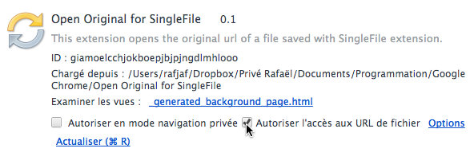

Short description
This extension helps opening the original url of a page saved with SingleFile extension.
SingleFile is an excellent third-party extension which allows you to archive a complete webpage into a single HTML file.
Unfortunately, when viewing such an archive, there is no easy way to reopen the original page (e.g. to check whether it has been updated since then).
This extension aims at filling this gap by displaying an icon in the Omnibox (next to the favorite icon), which allows with a single click to reopen the original page saved with SinglePage.
Install instruction
To complete installation, do not forget to open the Extension Manager and to allow the extension to have access to file URL, by selecting the appropriate option as shown below :

Otherwise, the extension would not be allowed to analyse your files saved with SingleFile.
Legal information
By using this extension, you agree with the following provisions :
This program is free software : you can use it, redistribute it and/or modify it under the terms of the GNU General Public License version 3 as published by the Free Software Foundation of the License.
The rights and duties stemming from this license and more generally any use of this program are governed by Belgian law. Any dispute pertaining to this program will be exclusively settled by the Court of Brussels (Belgium).
Please note that this program is distributed in the hope that it will be useful, but WITHOUT ANY WARRANTY; without even the implied warranty of MERCHANTABILITY or FITNESS FOR A PARTICULAR PURPOSE. See the GNU General Public License for more details.
Credits
The icons of this extension were created by Visual Pharm and are distributed under a Creative Commons Attribution-No Derivative Works 3.0 Unported License.
The layout of this page is based on the CSS theme andreas08 designed by Andreas Viklund and released as open source.